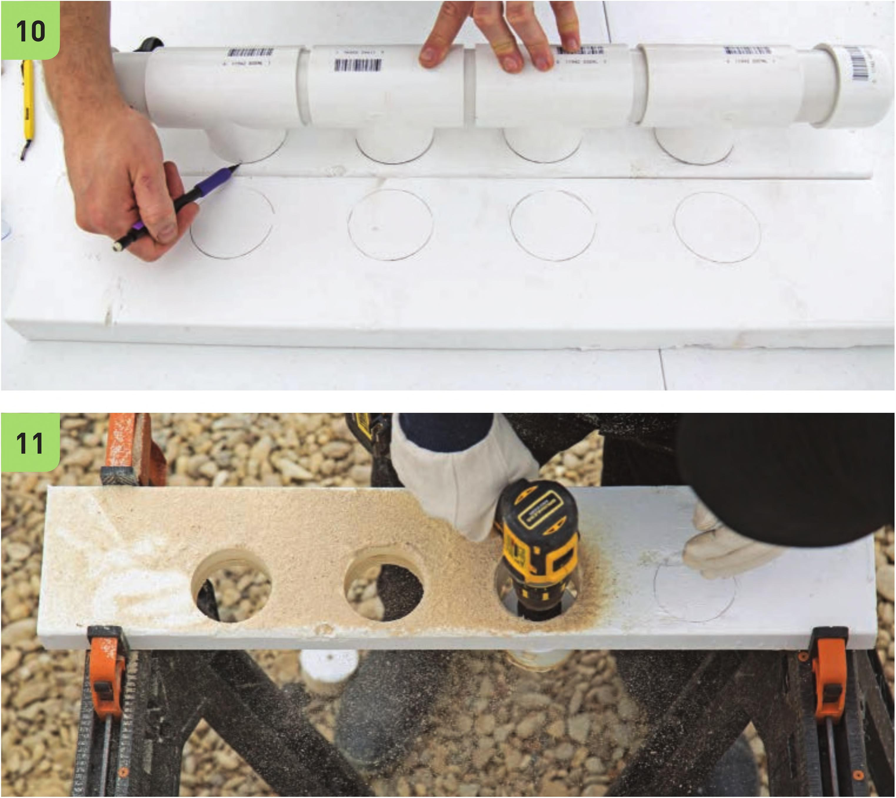

7 The end of the manifold with the 4" PVC segment will be used for the W drainage line. A 3A“ elbow will be inserted into the PVC and another W elbow will direct the flow to the reservoir. Check that there is enough space to fit these before drilling. Slowly drill the PVC and check periodically to see if the hole is large enough to hold the grommet. Most W grommets fit in a 15/i6 " to 1 " hole. 8 Fit the grommet snugly into the hole in the PVC manifold and insert one of the %" elbows. Assemble the Frame 9 Place the manifold on one of the 2 x 6" x 2'63/4" boards. There should be at least 1 V2" of space from the end caps to the 6" edges of the board. The manifold should be Vi from one of the 2'63A“ edges and 2Vi from the other 2'63/4" edge. With a marker, trace the ends of the 2" tees. 10 Repeat step 9 on the other 2 x 6" x 2'63/4M board. Be sure to trace the 2" tees near the 2'63/4n edge of the board. It is the positioning of these circles that will determine the slope of the NFT channels. 11 Use the 23/4n hole drill bit to create holes at the traced locations in the 2'63/u' boards. Clean off any sawdust from the boards. HYDROPONIC GROWING SYSTEMS 75
